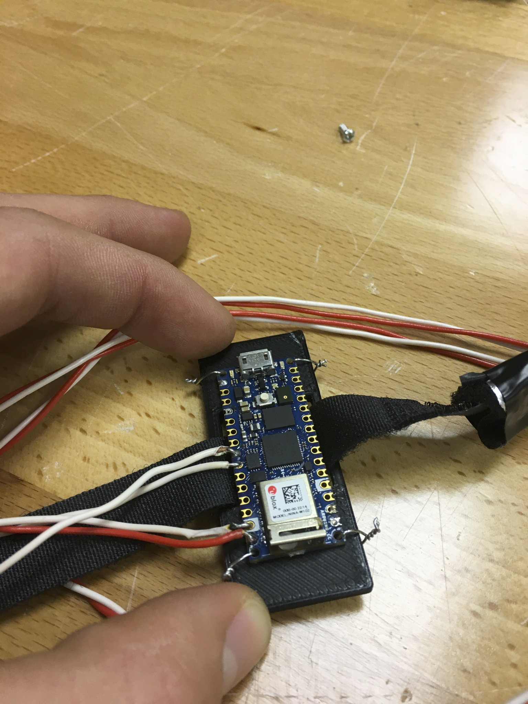

Wearable body mount integrating an Arduino board.
Click any thumbnail to view it larger.
My Contribution
CAD modeling, hardware, and wearable mounts.
Stride Guide was developed through Aggies Create as a team project. The system concept used accelerometer data from key points on a runner’s body to approximate stresses and provide customized feedback on running form.
My documented responsibilities were CAD modeling and hardware. I designed wearable mounts in SolidWorks, prepared prints in PrusaSlicer, and printed PLA parts on a Prusa MK3 i3 at Starforge.
What I worked on
- Designed body-mounted electronics hardware in SolidWorks.
- Developed 3D-printed mounts for the wearable sensor system.
- Prepared parts using PrusaSlicer and printed them in PLA.
- Integrated electronics hardware into strap-mounted assemblies.
- Contributed to the physical implementation as the sensing system evolved.
System Context
The team reached a stage where an Arduino recorded two accelerometer data streams and sent the data wirelessly to a local server, which saved the information to a CSV file.